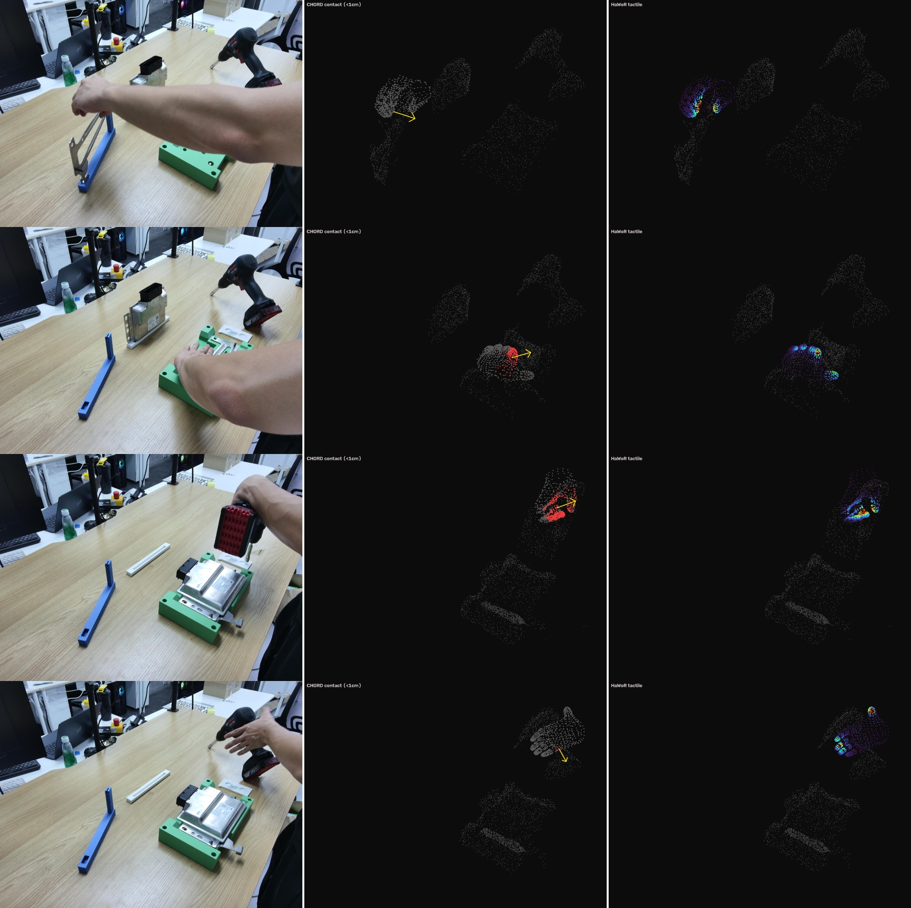
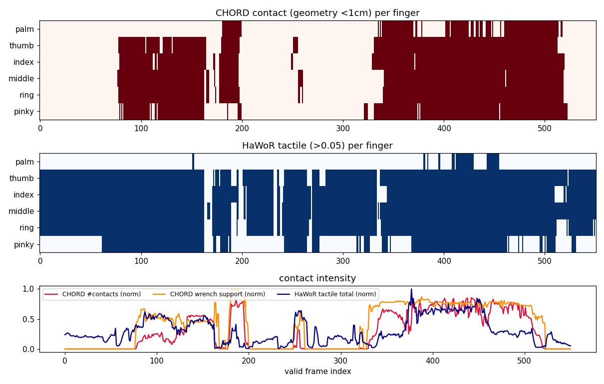

01What CHORD computes
Per frame, from the posed object surface (points + inward normals) and the MANO hand mesh (vertices + outward normals). Taken from CHORD's real code — the contact stage is imported directly (contact_utils.py); the wrench stage is a verbatim copy of tasks/v2d/mdp/utils.py.
| Step | CHORD function | What it does |
|---|---|---|
| 1 · contact detect | approximate_contact_with_id | object point in contact iff nearest hand vertex < 1 cm |
| 2 · link aggregate | compute_hand_link_contact_positions | assign contacts to nearest of 16 MANO links; softmax(−dist) weighted position/normal; part-id by mode vote |
| 3 · object contact | find_object_contact_positions | nearest object vertex + normal per link |
| 4 · friction cone | compute_friction_cone_edges | rays n + μ(cosθ·t₁ + sinθ·t₂), K edges + normal; μ = 0.5 |
| 5 · wrench space | compute_wrench_space | per force f: torque τ = p×f; wrench w = [f, τ/r_c], rc = object bounding-ball radius |
| 6 · support fn | compute_wrench_space_support_function | support(d) = clamp(maxₙ dᵀw, ≥0) over a 6D basis — the grasp's wrench-resisting capacity |
Hyperparameters are CHORD defaults, unchanged: contact threshold 0.01 m, friction μ = 0.5, friction-cone K = 8 edges + normal, torque scale rc = per-object bounding-ball radius, support basis = 64 directions on the scaled 6D sphere. Full derivation in claude-code-rc/dpp-bmw/CHORD_algorithm.md.
02Inputs on the BMW demo
Everything lives in the shared BA world frame (world = cam2 = calibration reference), so hand, objects and tactile are directly comparable with no extra transform.
| Input | Source | Detail |
|---|---|---|
| Hand mesh | MANO-pipeline verts_m (895,1556,3) | actor hand (index 1, 778 verts) + MANO faces → outward vertex normals |
| Object surface | mvpose 6D pose → CAD | per-frame object→world pose on RAW mesh verts; ~1500 sampled surface pts/obj; inward normals |
| Tactile (compare) | HaWoR contact_outputs (2,895,778) | actor tactile (index 0), per-vertex scalar force |
Two alignment facts pinned down before any number was computed: (a) the actor is mesh index 1 (11.0 cm to objects vs 52.7 cm for the background hand) but tactile index 0 (638 valid frames vs 210) — HaWoR single-view orders hands opposite to the 4-view fit; (b) poses/shard run on the 780-frame data timeline, verts/tactile on the 895-frame HOI timeline — mapped by nearest actor-wrist match, residual 0.000 mm (exact subset). 551 frames have valid actor tactile.
03Qualitative — same regions, tighter
Coordinate-matched to cam0: left = RGB observation, middle = CHORD contact (red = hand vertices within 1 cm; yellow arrow = net contact-normal force), right = HaWoR tactile (turbo heatmap). Object points in grey.

04Quantitative
Pooled over 551 valid frames. HaWoR tactile is a dense soft field (≈100% of the hand carries non-zero tactile on valid frames), so we sweep its binarization threshold; CHORD is the fixed 1 cm geometric contact.
Contact-map agreement (per-vertex) vs HaWoR threshold
| tactile > | hand covered | precision | recall | F1 | IoU |
|---|---|---|---|---|---|
| 0.00 | 100% | 1.00 | 0.16 | 0.28 | 0.16 |
| 0.02 | 35% | 0.71 | 0.33 | 0.45 | 0.29 |
| 0.05 | 25% | 0.59 | 0.39 | 0.47 | 0.31 |
| 0.10 | 17% | 0.46 | 0.44 | 0.45 | 0.29 |
| 0.20 | 9% | 0.29 | 0.50 | 0.37 | 0.23 |
| 0.30 | 6% | 0.19 | 0.55 | 0.29 | 0.17 |
Precision 1.00 at threshold 0 → CHORD's geometric contact is a strict subset of predicted tactile. Overlap peaks (F1 0.47 / IoU 0.31) when HaWoR is cut to its top ~25% of the hand — matching CHORD's tight 1 cm band.
Per-finger agreement (CHORD 1 cm vs HaWoR > 0.05, F1)
All five fingers agree tightly (F1 ≈ 0.68–0.72). The palm is where the two diverge: HaWoR rarely predicts strong palm tactile, while geometric proximity still fires when the hand rests on a part. Frame-level any-contact F1 = 0.74 (precision 1.00, recall 0.59).
Intensity over time

05What this says
- ✓The two signals are consistent.Geometric contact and learned tactile agree on when (grasp episodes), where (fingers), and how hard (intensity corr ≈ 0.55). Neither contradicts the other.
- ·CHORD = tight core; HaWoR = soft halo.CHORD marks only surface actually within 1 cm (precision 1.00, subset). HaWoR predicts a broad, soft pressure field — useful for a dense reward, looser as a contact mask.
- ·CHORD adds physics HaWoR lacks.The friction-cone wrench gives a force direction + torque and a grasp-support scalar — a physically-grounded contact signal, not just a per-vertex probability.
- →Palm is the one disagreement.Worth a look before either signal is trusted on palm-heavy contacts; fingers are reliable.
06Artifacts & repro
| What | Path |
|---|---|
| Compute (CHORD contact + wrench) | mano_run101_work/chord_bmw.py |
| Sweep + viz | mano_run101_work/chord_viz.py |
| CHORD code | mano_run101_work/CHORD_repo (nvidia-isaac/video_to_data) |
| Outputs | mano_run101_work/chord_out/run000/{chord.npz,metrics.json,metrics_sweep.json} |
| Object 6D pose | ALIN_ROSBAG/bmw_0821/pose_mvpose/run000/poses/*.yaml |
| HaWoR tactile | ALIN_ROSBAG/bmw_0821/contact_outputs/run000.npz |
| Algorithm notes | claude-code-rc/dpp-bmw/CHORD_algorithm.md |
Env vitra (trimesh 4.11 + torch 2.3). Reproduce: python chord_bmw.py run000 && python chord_viz.py run000. Posed-CAD 6D poses courtesy of the DPP-ICLR27 mvpose run on run000.